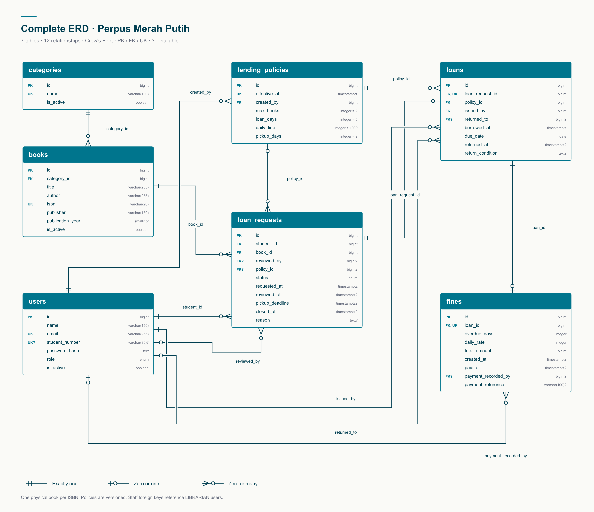

PMP-01 / PERPUSTAKAAN KAMPUS
PROJECT DOCUMENT
Perpus
Merah Putih
Aplikasi web untuk mengelola buku
dan layanan peminjaman perpustakaan kampus.
BUSINESS REQUIREMENTS
DOCUMENT
SCOPE / BOOK MANAGEMENT & BORROWING
Version 1.325 Oktober 2026
Document statusDraf untuk peninjauan
Table of contents
- Business Requirements Definition
- Introduction
- Scope
- System Perspective
- Business Requirements
- Acknowledgement & Approval
1. Business Requirements Definition
| Project information |
Description |
| Project ID |
PMP-01 |
| Project name |
Perpus Merah Putih |
| Requester |
Pemilik proyek tugas kuliah |
| System / Application |
Aplikasi web perpustakaan kampus |
| Users |
Mahasiswa dan pustakawan |
| Document status |
Draf versi 1.3, belum ditandatangani |
| Version |
Date |
Version summary |
| 1.0 |
24 Oktober 2026 |
Penyusunan kebutuhan awal. |
| 1.1 |
24 Oktober 2026 |
Penyederhanaan BRD mengikuti struktur referensi. |
| 1.2 |
24 Oktober 2026 |
Judul bagian berbahasa Inggris dan seluruh tabel diberi garis lengkap. |
| 1.3 |
25 Oktober 2026 |
Satu buku fisik per judul, ISBN wajib dan unik, serta penghapusan pencatatan eksemplar dan fitur perpanjangan pinjaman. |
2. Introduction
2.1. Background
Perpustakaan kampus membutuhkan aplikasi untuk mencatat koleksi buku, memproses pengajuan pinjaman, dan memantau pengembalian. Mahasiswa dapat mencari buku serta mengajukan peminjaman secara online. Pustakawan dapat mengelola koleksi dan mencatat transaksi dalam satu sistem.
2.2. Objective & Expected Improvements
- Memudahkan pencarian buku dan pemeriksaan ketersediaannya.
- Memudahkan mahasiswa mengajukan pinjaman dan melihat statusnya.
- Membantu pustakawan mencatat penyerahan, pengembalian, dan keterlambatan.
- Menertibkan antrean reservasi dan pencatatan denda.
- Memungkinkan pustakawan mengubah aturan peminjaman sesuai kebutuhan.
2.3. Business Process Overview
Mahasiswa masuk ke aplikasi, mencari buku, lalu mengajukan pinjaman. Sistem menempatkan pengajuan pada daftar tunggu atau antrean sesuai ketersediaan. Pustakawan memeriksa pengajuan berdasarkan urutan masuk dan menyiapkan buku yang disetujui.
Mahasiswa mengambil buku di perpustakaan. Masa pinjam dimulai ketika pustakawan mencatat penyerahan. Saat buku kembali, pustakawan mencatat pengembalian dan sistem menghitung denda jika terlambat.
2.3.1. Current Business Process
Proses yang digunakan perpustakaan saat ini belum dikonfirmasi melalui observasi. Pencatatan manual, seperti pemeriksaan buku di rak dan pencatatan transaksi oleh pustakawan, hanya menjadi gambaran pembanding bagi rancangan aplikasi.
3. Scope
3.1. In Scope
- Akun mahasiswa dan pustakawan dengan hak akses berbeda.
- Pengelolaan mahasiswa, kategori, dan buku dengan ISBN unik.
- Katalog buku, pencarian, dan informasi ketersediaan.
- Pengajuan pinjaman online, persetujuan, pembatalan, dan antrean reservasi.
- Pencatatan pengambilan buku, pengembalian, serta riwayat pinjaman.
- Denda keterlambatan dan pencatatan pelunasan.
- Pengaturan aturan pinjam dan ringkasan transaksi perpustakaan.
3.2. Out of Scope
- Aplikasi seluler native, buku elektronik, dan layanan lintas perpustakaan.
- Integrasi sistem akademik, SSO kampus, RFID, dan payment gateway.
- Pembayaran online, cicilan, serta penghapusan denda.
- Penggantian buku hilang atau rusak dan pengadaan koleksi.
- Notifikasi melalui email, SMS, atau WhatsApp. Status tersedia dalam aplikasi.
- Perpanjangan pinjaman.
4. System Perspective
4.1. Assumptions
- Sistem digunakan oleh satu perpustakaan kampus untuk koleksi fisik.
- Pengguna memiliki browser dan koneksi ke server aplikasi.
- Pustakawan memverifikasi identitas mahasiswa dan kondisi buku.
- Akun mahasiswa dikelola pustakawan. Akun pustakawan pertama disiapkan pengelola teknis.
- Perhitungan waktu menggunakan hari kalender dalam zona waktu Asia/Jakarta.
4.2. Exclusions
Pemeriksaan fisik buku dan penerimaan pembayaran tetap dilakukan pustakawan. Aplikasi hanya mencatat hasilnya. Pembayaran denda dilakukan di luar aplikasi dan dicatat setelah lunas. Migrasi data lama serta pemeliharaan perangkat keras tidak termasuk dalam proyek awal.
4.3. Constraints
- Pengembangan dibatasi pada dua peran, yaitu mahasiswa dan pustakawan.
- Satu data buku mewakili satu buku fisik dengan ISBN wajib dan unik. Setiap pengajuan memuat satu buku dan menghasilkan paling banyak satu pinjaman.
- Jadwal, anggaran, dan teknologi implementasi belum ditetapkan.
- Ketersediaan aplikasi bergantung pada server dan jaringan yang digunakan.
5. Business Requirements
5.1. Functional Requirements
- FR-01. Autentikasi. Pengguna dapat masuk dan keluar. Akses dibatasi berdasarkan peran, status akun, dan kepemilikan transaksi.
- FR-02. Data mahasiswa. Pustakawan dapat menambah, memperbarui, dan menonaktifkan akun mahasiswa. NIM dan email harus unik.
- FR-03. Data buku. Pustakawan dapat mengelola kategori, judul, penulis, ISBN wajib dan unik, penerbit, serta tahun terbit. ISBN yang sama tidak boleh dibuat sebagai buku lain.
- FR-04. Ketersediaan buku. Satu judul hanya memiliki satu buku fisik. Buku tersedia jika aktif, belum disiapkan untuk pengambilan, dan tidak sedang dipinjam. Tidak ada tabel eksemplar, kode inventaris, atau jumlah stok.
- FR-05. Katalog. Pengguna dapat mencari buku dan melihat status tersedia, siap diambil, dipinjam, atau nonaktif.
- FR-06. Pengajuan online. Mahasiswa dapat mengajukan pinjaman dan melihat status pengajuannya.
- FR-07. Antrean reservasi. Sistem mengurutkan pengajuan per judul berdasarkan waktu masuk.
- FR-08. Persetujuan. Pustakawan dapat menyetujui atau menolak pengajuan dengan alasan yang jelas.
- FR-09. Pembatalan. Mahasiswa dapat membatalkan pengajuan sebelum penyerahan. Pengajuan yang melewati batas pengambilan kedaluwarsa dan melepas buku.
- FR-10. Penyerahan. Pustakawan mencatat pengambilan buku. Sistem membuat pinjaman dan menetapkan tanggal jatuh tempo.
- FR-11. Pengembalian. Pustakawan mencatat waktu kembali, kondisi buku, dan penyelesaian pinjaman.
- FR-12. Denda. Sistem menghitung denda keterlambatan. Pustakawan mencatat pelunasan penuh beserta referensi pembayaran.
- FR-13. Pengaturan. Pustakawan dapat mengubah angka kebijakan berikut. Perubahan tidak mengubah ketentuan pinjaman lama.
- FR-14. Ringkasan dan riwayat. Pustakawan dapat melihat seluruh transaksi. Mahasiswa hanya dapat melihat transaksi miliknya.
Aturan awal yang telah disepakati adalah sebagai berikut.
| Business rule |
Initial value |
| Batas buku |
2 buku per mahasiswa |
| Masa pinjam |
5 hari kalender sejak penyerahan |
| Denda keterlambatan |
Rp1.000 per buku per hari kalender |
| Waktu pengambilan |
2 hari kalender sejak persetujuan |
Kuota terpakai mencakup buku yang sedang dipinjam dan buku yang sudah disiapkan. Pengajuan yang masih menunggu atau mengantre belum memakai kuota. Akun nonaktif, pinjaman terlambat, denda belum lunas, kuota penuh, atau pengajuan ganda menghalangi pinjaman baru. Sistem memeriksa ulang kelayakan saat persetujuan dan penyerahan.
Batas pengambilan dan jatuh tempo berlaku sampai akhir tanggal yang ditetapkan dalam WIB. Fitur perpanjangan pinjaman tidak termasuk dalam rancangan ini.
5.2. Non-functional Requirements
- NFR-01. Keamanan. Kata sandi disimpan sebagai hash. Sistem memeriksa hak akses pada server dan menggunakan HTTPS saat digunakan secara online.
- NFR-02. Integritas data. Satu buku tidak dapat disiapkan atau dipinjam oleh dua mahasiswa bersamaan. ISBN wajib unik. Pengiriman ulang transaksi tidak menggandakan pencatatan.
- NFR-03. Kinerja. Target waktu respons pencarian dan riwayat adalah maksimal 2 detik untuk 95% permintaan pada pengujian 20 pengguna bersamaan, 5.000 buku dengan ISBN berbeda.
- NFR-04. Kemudahan penggunaan. Tampilan dapat digunakan pada komputer dan ponsel, dengan formulir berlabel serta pesan kesalahan yang jelas.
- NFR-05. Pencadangan. Data dicadangkan setiap hari dan dapat dipulihkan dari cadangan terakhir.
- NFR-06. Ketepatan waktu. Perhitungan jatuh tempo, pengambilan, dan keterlambatan konsisten dalam zona waktu Asia/Jakarta.
- NFR-07. Riwayat aktivitas. Sistem menyimpan pelaku dan waktu transaksi penting agar perubahan dapat ditelusuri.
Target tersebut menjadi acuan pengujian saat implementasi. Aplikasi belum dibangun atau diuji. ERD lengkap tersedia pada bagian 5.3.
5.3. Entity Relationship Diagram
ERD berikut menggabungkan seluruh 7 tabel dan 12 relasi dalam satu diagram. Setiap tabel menampilkan seluruh atribut, tipe data, dan kuncinya. PK adalah primary key, FK adalah foreign key, UK adalah unique key, dan tanda ? menunjukkan nilai yang boleh kosong. Simbol Crow's Foot menunjukkan tepat satu, nol atau satu, serta nol atau banyak.
Satu data buku mewakili satu buku fisik dengan ISBN wajib dan unik. Setiap pengajuan menghasilkan paling banyak satu pinjaman dan setiap pinjaman memiliki paling banyak satu denda. Kebijakan disimpan per versi. Foreign key petugas merujuk pengguna dengan peran LIBRARIAN.

6. Acknowledgement & Approval
6.1. Acknowledgement
| Name |
Role |
Date |
Signature |
| Belum diisi |
Perwakilan pustakawan |
Belum diisi |
Belum diisi |
| Belum diisi |
Perwakilan mahasiswa |
Belum diisi |
Belum diisi |
6.2. Approval
| Name |
Role |
Date |
Signature |
| Belum diisi |
Pemilik proyek |
Belum diisi |
Belum diisi |
| Belum diisi |
Dosen pembimbing |
Belum diisi |
Belum diisi |
Fitur dan angka kebijakan telah dikonfirmasi pemilik proyek melalui percakapan. Persetujuan formal dokumen belum diberikan.